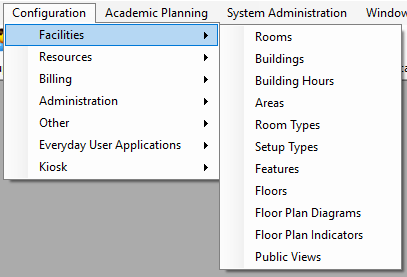

Before you can use

Note: Floor Plan Diagrams and Floor Plan Indicators are optional features used when your organization has the optional add-on,
This section will include information on the following:
Note: If your organization has purchased and installed EMS Desktop Client -- Academic Planning, then you can synchronize data from your Student Information System (SIS) such as your campus buildings, rooms, and room types. As a result, before you carry out any configuration of your facilities data, see the